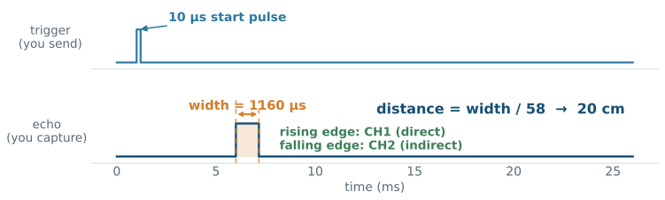

EE5203 Microprocessors
L09 - Input Capture
Two numbers, one answer
A signal arrived at a pin. The hardware wrote down two numbers—while your program did something else entirely.
By the end, you will explain who wrote those numbers, when, into which register—and measure frequency, pulse width, and duty of any digital signal.
The story so far
01 WEEK 6: an edge on a pin can interrupt the program.
02 WEEK 7: a hardware counter keeps time—clock → PSC → CNT.
03 LAST LECTURE: the channel compares CNT with CCR and writes a waveform onto a pin.
04 TODAY: the same channel runs backwards—an edge on the pin captures CNT into CCR.
Today’s objectives
01 Explain the capture mechanism: edge → CNT snapshot → CCR.
02 Configure a capture channel: edge polarity, direct/indirect input, filter.
03 Turn timestamps into period, frequency, pulse width, and duty.
04 Choose the time base so measurements fit the counter—and survive wrap.
05 Verify captures in the SFR view.
L08 recap: the channel
Thirty-second check on last lecture:
1 In PWM, which register sets the frequency, and which the duty?
2 What does the channel comparator ask on every tick?
3 Why is the register called capture/compare?
ARR → frequency, CCR → duty; the comparator asks CNT < CCR?; and the name promises a second job—today’s.
Why measure signals?
01 TACHOMETER: a fan or wheel emits one pulse per turn—frequency is RPM.
02 ULTRASONIC RANGING: an echo pulse’s width encodes distance.
03 RC RECEIVERS: servo commands arrive as 1–2 ms pulses—now you can read them too.
04 TRUST, BUT VERIFY: measure your own PWM and check it against the numbers you configured.
Reversing the arrow
Capture, on the graph

In-lecture demo: interactive capture animation.
What exactly is captured
01 On the selected edge, hardware copies the live CNT into CCR1—a timestamp, not a count of events.
02 The same instant, CC1IF sets in SR—a pending flag per channel, exactly like UIF in Week 7.
03 With CC1IE set in DIER, the flag raises the timer’s interrupt—the Week 6 path, one more source.
Precision comes from hardware doing the timestamping. Interrupt latency delays the reading, never the value.
Choosing the time base
The captured numbers are only as good as the clock behind them:
01 Keep the course tick: PSC = 15 → 1 MHz → timestamps in microseconds.
02 Free-run the counter: ARR at maximum; captures are just reads of a running clock.
03 Mind the width: 16-bit TIM4 wraps at 65.5 ms; 32-bit TIM2/TIM5 at 71.6 minutes.
| Signal | At 1 µs tick, use |
|---|---|
| 1 kHz PWM (1 ms period) | any timer—TIM4 is fine |
| 2 Hz blink (500 ms period) | TIM2/TIM5, or a slower tick |
CubeMX configuration
01 Click PB6 → TIM4_CH1 (AF2 — the pin handover, exactly as in L08).
02 In Timers → TIM4: Channel 1 = Input Capture direct mode.
03 Parameters: Prescaler 15, Counter Period 65535 (free-run), polarity rising.
04 NVIC: enable TIM4 global interrupt; generate and verify, as always.
The generated config
TIM_IC_InitTypeDef sConfigIC = {0};
sConfigIC.ICPolarity = TIM_INPUTCHANNELPOLARITY_RISING;
sConfigIC.ICSelection = TIM_ICSELECTION_DIRECTTI; // TI1 -> IC1
sConfigIC.ICFilter = 0;
HAL_TIM_IC_ConfigChannel(&htim4, &sConfigIC, TIM_CHANNEL_1);
HAL_TIM_IC_Start_IT(&htim4, TIM_CHANNEL_1);01 Direct selection: channel 1 listens to its own pin, TI1.
02 Start_IT arms the capture and its interrupt—Base_Start_IT’s sibling.
Deep dive: UM1725 Rev 8, TIM functions — p. 1065.
The capture callback
void HAL_TIM_IC_CaptureCallback(TIM_HandleTypeDef *htim)
{
if (htim->Instance == TIM4 &&
htim->Channel == HAL_TIM_ACTIVE_CHANNEL_1) {
uint16_t now = HAL_TIM_ReadCapturedValue(htim, TIM_CHANNEL_1);
period_us = (uint16_t)(now - last); // wrap-safe on 16 bits
last = now;
}
}01 One shared callback for all capture channels—check instance and channel.
02 ReadCapturedValue returns CCR1—the hardware’s timestamp.
03 The cast keeps the subtraction 16-bit—wrap-safe, as since Week 6.
From period to frequency
01 Consecutive same-polarity edges → one full period.
02 The 1 µs tick makes the arithmetic readable—divide 10⁶ by the period in µs.
03 Average several periods for jittery sources.
Practice: read the captures
TIM4, 1 µs tick, rising edges. Captured values: 64000, then 1500.
1 What is the period? (Careful—16 bits.)
2 What frequency is that?
3 What is the slowest signal TIM4 can measure this way at 1 µs?
(uint16_t)(1500 - 64000) = 3036 µs → ≈ 329 Hz. The unsigned wrap did the right thing. Slower than one wrap (65.5 ms, ≈ 15 Hz) and the measurement silently lies—choose TIM2/TIM5 or a slower tick.
Duty needs two timestamps

One pin, two channels listening: CH1 times the rising edges (period), CH2 the falling edge (high time).
The indirect trick
TIM_IC_InitTypeDef s1 = {0};
s1.ICPolarity = TIM_INPUTCHANNELPOLARITY_RISING;
s1.ICSelection = TIM_ICSELECTION_DIRECTTI; // TI1 -> IC1
s1.ICFilter = 0;
HAL_TIM_IC_ConfigChannel(&htim4, &s1, TIM_CHANNEL_1);
TIM_IC_InitTypeDef s2 = {0};
s2.ICPolarity = TIM_INPUTCHANNELPOLARITY_FALLING;
s2.ICSelection = TIM_ICSELECTION_INDIRECTTI; // TI1 -> IC2: same pin!
s2.ICFilter = 0;
HAL_TIM_IC_ConfigChannel(&htim4, &s2, TIM_CHANNEL_2);Indirect selection routes channel 2’s capture input to channel 1’s pin—one wire, two independent timestamps.
PWM input mode
01 The hardware can automate the pair: a rising edge resets CNT to zero.
02 Then CCR1 holds the period and CCR2 the high time—directly, no subtraction.
03 Costs the whole timer (the reset is global)—the manual pair keeps the timer free-running for other channels.
Deep dive: RM0368 Rev 6, §13.3.6 PWM input mode — p. 334.
Application: ultrasonic ranging

The HC-SR04 answers a 10 µs trigger with an echo pulse whose width is the round-trip flight time: distance_cm = width_us / 58.
Noise and the filter
01 Real edges ring and bounce—Week 6’s lesson, now on measurement inputs.
02 Each channel has a digital filter (ICFilter, 0–15): the edge must hold for N samples before it counts.
03 It is the debounce idea, executed in silicon—no HAL_GetTick() needed.
Overcapture
01 If a new edge arrives before you read CCR1, the old timestamp is overwritten.
02 Hardware confesses: the overcapture flag CC1OF sets in SR.
03 Seeing CC1OF means your code reads too slowly for the signal—filter it, prescale the capture, or restructure.
The capture registers
| Register | Role today |
|---|---|
TIM4->CCR1/2 |
hardware-written timestamps |
TIM4->CCMR1 |
CC1S/CC2S: direct vs indirect input; ICF filter |
TIM4->CCER |
channel enable + edge polarity |
TIM4->SR |
CC1IF capture flags · CC1OF overcapture |
TIM4->DIER |
CC1IE/CC2IE interrupt enables |
Deep dive: RM0368 Rev 6, TIMx_CCMR1 — p. 362, TIMx_CCER — p. 366.
Register evidence
01 Feed a signal, pause repeatedly: CCR1 changes by itself—hardware is timestamping without you.
02 Flip CC1P in CCER from the SFR view: the captures move to the other edge, live.
03 Stay paused through several edges, resume: CC1OF is set—you watched an overcapture happen.
A successful build proves none of this. The SFR view does.
Common capture mistakes
01 WRAP IGNORED: 16-bit timer, slow signal—period numbers that lie silently.
02 WRONG POLARITY: measuring low time while calling it high time.
03 DIRECT/INDIRECT MIXED UP: channel 2 configured direct listens to the wrong pin.
04 SIGNED SUBTRACTION: the cast matters—(uint16_t)(now - last).
05 NO FILTER ON A NOISY LINE: every ring counts as an edge; periods collapse.
06 FORGOT Start_IT: configured, armed—never started. CCR1 stays frozen.
Laboratory mission
Close the loop: TIM2 generates PWM on PA5 (last lab’s breathing LED), one jumper carries it to PB6, and TIM4 measures it back—frequency and duty, compared against what you configured.
You will show:
- the capture channel configured with the 1 µs tick, polarity justified;
- measured period and duty matching the generating side’s
ARR/CCR; - a live polarity flip from the SFR view and its effect;
- an intentional overcapture, observed via
CC1OF; - one individual variation, predicted before flashing.
Mastery checklist
✓ Explain edge → CNT snapshot → CCR with the capture figure.
✓ Configure direct and indirect capture channels.
✓ Compute frequency and duty from timestamps, wrap-safe.
✓ Choose timer width and tick for the signal being measured.
✓ Read the evidence: CCR moving, CC1IF, CC1OF.
Next: the ADC—when the signal is not digital at all.
Exit ticket
TIM4, 1 µs tick, rising captures 4000 and 9000; falling capture 5250.
01 PERIOD: What is the signal’s period and frequency?
02 DUTY: What is the duty cycle?
03 MECHANISM: Who wrote 5250 into CCR2, and exactly when?
04 EVIDENCE: Which flag tells you a capture was lost?
Every concept in this lecture, with page-linked sources: academic references.
EE5203 - L09